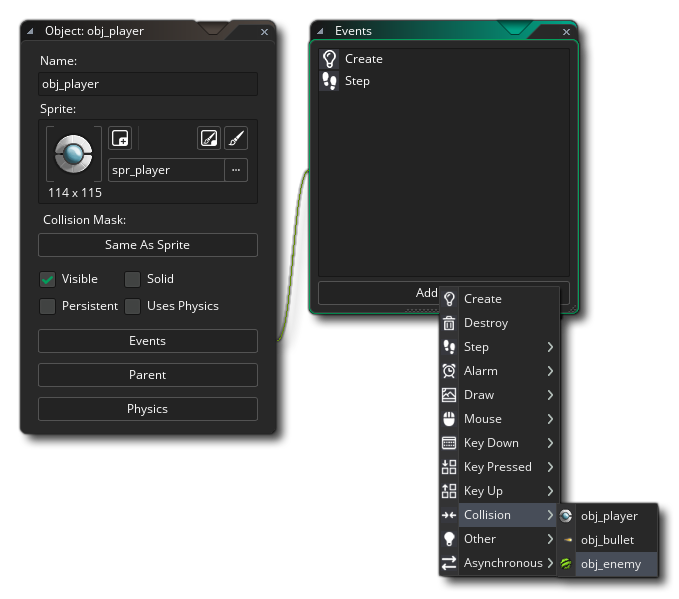
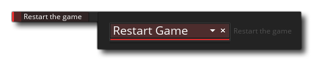

Before we end this tutorial, let's quickly add in a collision for the player colliding with the enemy. This won't be the final way we do this, but for testing and to give a feel for how the game will pan out, it is fine.
To start with open up the object "obj_player" and add a new collision event with the object "obj_enemy": 
In this event we need to add the following action to Restart The Game (from the Game action library): 
All this code does is (as you might imagine) restart the game the moment an enemy instance "touches" the player instance, meaning that we now have to not just shoot the enemies, but dodge them too. This is a very basic mechanic and we'll refine it more in later chapters, but for now it's enough for us to test and get a feel for how everything plays.
You should run the game again now, and you'll see that the experience is quite different to what it was before. The collisions are solid and look better, and there is a certain skill required by the player to avoid the enemies while shooting.